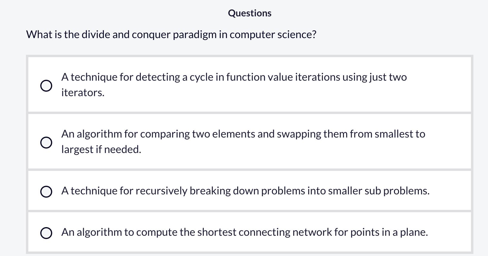
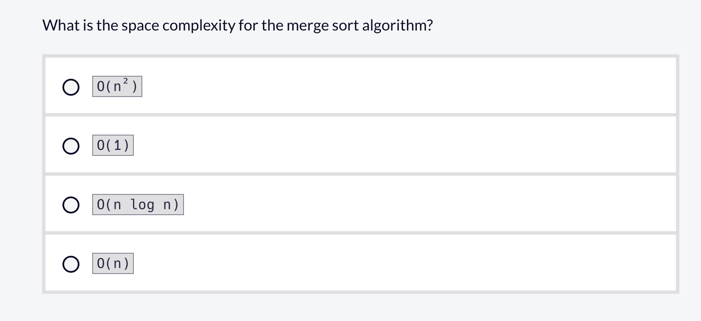

9 算法
9.1 搜索（Searching）和排序（Sorting）算法
9.1.1 什么是二分查找？它与线性搜索有什么不同？
在计算机科学中，遍历列表查找项目是一项常见任务。关于搜索，有两种关键算法是你应该了解的：线性搜索（Linear Search）和二分查找（Binary Search）。
线性搜索从列表的开头开始，依次遍历每个项目，直到找到它要查找的目标值。
如果找到了目标值，则返回该值在列表中的索引。如果未找到目标值，则返回 -1。我们返回 -1 是因为它在大多数编程语言中不是一个有效的索引。
以下是线性搜索的代码示例：
示例代码
def linear_search(arr, target):
for i in range(len(arr)):
if arr[i] == target:
return i
return -1如果我们要搜索的列表是 [13, 4, 7, 9, 10]，目标值是 9，函数将返回 3，因为 9 位于索引 3 处。
如果我们把目标值改为 5，函数将返回 -1，因为列表中没有 5。
虽然这是一个相对简单的算法，但它并不是最高效的。如果你有一个包含大量项目的列表，线性搜索可能需要很长时间才能找到目标值。
线性搜索的时间复杂度是 \(O(n)\)，因为搜索列表所需的时间随着列表大小的增加而线性增长。
线性搜索的空间复杂度是 \(O(1)\)，因为搜索列表不需要任何额外的空间。
二分搜索是一种在大量项目列表中进行搜索的更高效算法。其前提是列表必须按升序排序。
二分搜索通过将列表一分为二，并检查目标值是否位于列表中间来工作。如果目标值在列表中间，则返回目标值的索引。否则，算法会检查目标值在列表的左半部分还是右半部分。
它会继续将列表剩余的部分一分为二，直到找到目标值。如果列表中没有目标值，则返回 -1。
以下是二分搜索的代码示例：
示例代码
def binary_search(arr, target):
low = 0
high = len(arr) - 1
while low <= high:
mid = (low + high) // 2
if arr[mid] == target:
return mid
elif arr[mid] < target:
low = mid + 1
else:
high = mid - 1
return -1我们首先确定一个最低索引 low 和一个最高索引 high。这代表了我们要搜索的列表范围。
然后我们检查 low 小于或等于 high 的条件。如果 low 大于 high，说明我们已经搜索了整个列表但未找到目标值。在这种情况下，我们停止搜索并返回 -1。
如果 low 小于或等于 high，我们计算列表的中间索引 mid。然后检查目标值是否在中间索引处。如果是，我们返回中间索引。
否则，我们检查中间点的值是否小于目标值。如果是，我们将 low 索引更新为中间索引加一。这意味着我们将搜索列表的右半部分。
最后，如果其他条件都不为真，我们将 high 索引更新为中间索引减一。这意味着我们将搜索列表的左半部分。
我们继续重复这个过程，直到找到目标值或确定目标值不在列表中。
二分搜索的时间复杂度是 \(O(\log n)\)，因为搜索列表所需的时间随着列表大小的增加而对数增长。
二分搜索的空间复杂度是 \(O(1)\)，因为搜索列表不需要任何额外的空间。
线性搜索和二分搜索可以用于你在计算机科学中遇到的各种问题。理解这两种算法之间的区别以及何时使用哪种算法非常重要。
9.1.2 什么是分治（Divide and Conquer）思想？归并排序（Merge Sort ）是如何工作的？
计算机科学中的分治法（Divide and Conquer）范式是一种将问题递归地分解为更小的子问题的技术。这项技术的一个关键方面是递归，即当一个函数反复调用自身，直到达到一个基础情况（base case）为止。在本节课中，我们将通过研究归并排序（Merge Sort）算法来更好地理解分治法是如何工作的。
假设我们有以下数字列表：
示例代码
42 37 53 17我们的目标是使用归并排序算法将该列表按从小到大的顺序进行排序。第一步是将该列表一分为二：
示例代码
42 37 | 53 17然后我们需要看列表的左侧部分：
示例代码
42 37我们取这个子列表并再次将其一分为二，直到每个子列表只包含一个项目：
示例代码
42 | 37只包含一个项目的列表在默认情况下是已排序的。接下来我们需要将这些单元素子列表合并成一个已排序的列表：
示例代码
37 42然后我们对原始列表的右侧部分遵循相同的过程：
示例代码
# 原始列表的右侧
53 17
# 将列表一分为二
53 | 17
# 将列表合并为已排序的顺序
17 53现在原始列表的两半都已排序，我们将这两半合并在一起并对元素进行排序：
示例代码
17 37 42 53以下是该算法在代码中的样子：
示例代码
def merge_sort(arr):
if len(arr) <= 1:
return arr
mid = len(arr) // 2
left = merge_sort(arr[:mid])
right = merge_sort(arr[mid:])
sorted_list = []
i = 0
j = 0
while i < len(left) and j < len(right):
if left[i] <= right[j]:
sorted_list.append(left[i])
i += 1
else:
sorted_list.append(right[j])
j += 1
sorted_list.extend(left[i:])
sorted_list.extend(right[j:])
return sorted_list归并排序的时间复杂度是 \(O(n \log n)\)，因为列表被持续地一分为二（\(\log n\)），然后合并在一起（\(O(n)\)）。与其他排序算法（如冒泡排序）不同，归并排序不是原地排序的，其空间复杂度为 \(O(n)\)。


9.2 汉诺塔问题（Tower of Hanoi）
这个问题叫 汉诺塔问题，但名字不重要。你可以把它理解成一个极其简单但规则很严格的搬东西游戏。
游戏设定只有三条规则，你有什么？三根柱子。
- 左边一根
- 中间一根
- 右边一根
一些圆盘，大小不一样，中间有孔，可以套在柱子上。而且是，大的在下面小的在上面。 
你要做什么？ 把所有盘子，从左边那根柱子，搬到右边那根柱子
但有三条非常严格的规则：
- 一次只能搬一个盘子
- 只能从“最上面”拿盘子
- 小盘子不能放在大盘子下面
具体怎么实现呢？
我们把规则写得非常机械：
规则 1：最小情况（机器的“停下来条件”）
如果只剩 1 个盘子：从当前柱子，直接搬到目标柱子。
完成。
规则 2：一般情况（n 个盘子）
如果有 n 个盘子：
- 先把 上面的 n−1 个，搬到中间柱
- 再把 最大的那个，搬到目标柱
- 最后把 那 n−1 个，从中间柱搬到目标柱
第 1 步和第 3 步，做的事情和“整体问题一模一样”，只是盘子少了。
你可以把算法想成一个极其死板的工人，每次接到任务：“搬 n 个盘子”，它只会检查一件事：是不是 1 个？是 → 直接搬；不是 → 按三步拆任务。它不会思考、不创新、不怀疑，只会照规则做。
用最直白的“伪代码”表示
搬盘子(n, 起点, 中转, 终点):
如果 n == 1:
把盘子从 起点 搬到 终点
停止
否则:
搬盘子(n-1, 起点, 终点, 中转)
把最大的盘子从 起点 搬到 终点
搬盘子(n-1, 中转, 起点, 终点)实际代码：
def hanoi_solver(n):
# Initialize the three rods
# rod1 starts with all disks [n, n-1, ..., 1] (largest at bottom, smallest on top)
# But since we're representing as lists where the rightmost is top,
# we store as [n, n-1, ..., 1] so that pop() gives us the top disk
rod1 = list(range(n, 0, -1)) # [n, n-1, ..., 1]
rod2 = []
rod3 = []
# Store all states including initial state
states = []
def record_state():
# Create string representation of current state
r1_str = str(rod1)
r2_str = str(rod2)
r3_str = str(rod3)
states.append(f"{r1_str} {r2_str} {r3_str}")
def move_disk(source, dest):
# Move top disk from source to dest
disk = source.pop()
dest.append(disk)
def hanoi_recursive(disks, source, auxiliary, target):
if disks == 1:
# Base case: move one disk
move_disk(source, target)
record_state()
else:
# Move n-1 disks from source to auxiliary using target as helper
hanoi_recursive(disks - 1, source, target, auxiliary)
# Move the largest disk from source to target
move_disk(source, target)
record_state()
# Move n-1 disks from auxiliary to target using source as helper
hanoi_recursive(disks - 1, auxiliary, source, target)
# Record initial state
record_state()
# Solve the puzzle if there are disks to move
if n > 0:
hanoi_recursive(n, rod1, rod2, rod3)
return "\n".join(states)从0再实现一遍
def hnt(n):
a = [n for n in range(n,0,-1)]
b = []
c = []
def record_state():
print(str(a))
print(str(b))
print(str(c))
print("结束一轮记录")
def move(start,dest):
disk = start.pop()
dest.append(disk)
def hnt_solve(n,curr,adj,target):
if n == 1:
move(curr,target)
record_state()
else:
hnt_solve(n-1,curr,target,adj)
move(curr,target)
record_state()
hnt_solve(n-1,adj,curr,target)
record_state()
hnt_solve(n,a,b,c)
hnt(4)基本逻辑是，抽象来看一共只有三步，把上面n-1个盘子移到最中间，再把最底下的盘子移到最右边，再把中间的盘子移到最右边。其余的都是这三步的重复。